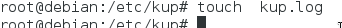
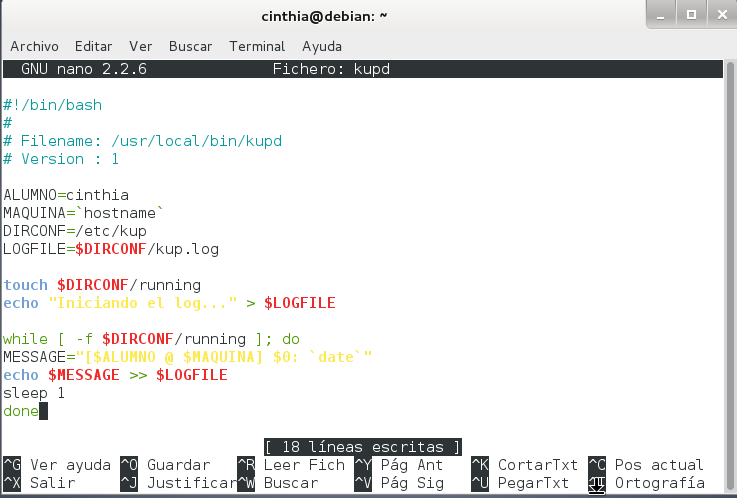
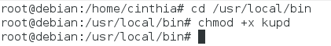
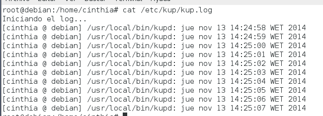
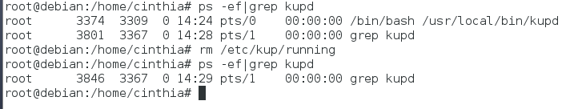
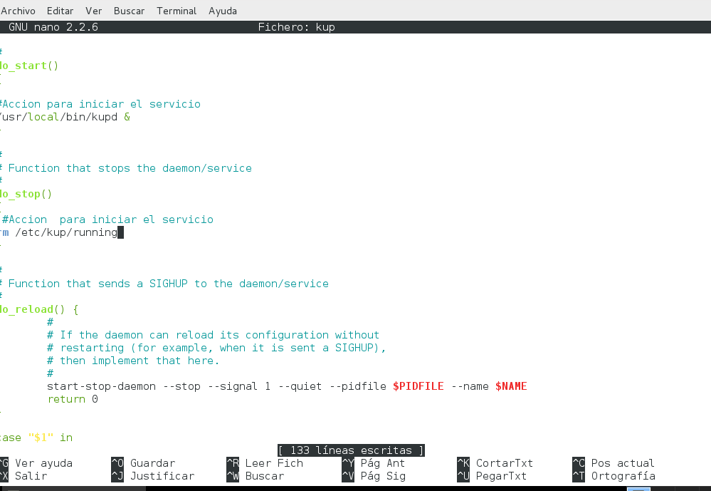
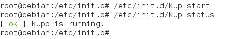
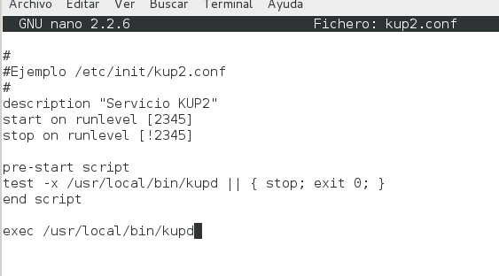

- Módulo: Administración de Sistemas Operativos
- Título del trabajo Crear un servicio
- Componentes del grupo: Cinthia A. Vargas Jiménez
- Curso Académico: 2014/2015
- Fecha de entrega: NOVIEMBRE de 2014
En la siguiente practica , necesitaremos una máquina virtual "Debian"
Crearemos una carpeta y un fichero como se muestra en la siguiente imagen

Copiaremos el script , proporcionado por el profesor en la actividad

En el siguiente paso , daremos permisos de ejecución al script

Procedemos a ejecutarlo
Ejecutaremos "cat /etc/kup/kup.log" para ver los mensajes cada tiempo


El siguiente script , controlará el inicio y parada que tendremos que modificar algunas líneas.

Daremos permisos de ejecución
Comprobamos el servicio

Crearemos un fichero en "etc/init/kup2.conf"
